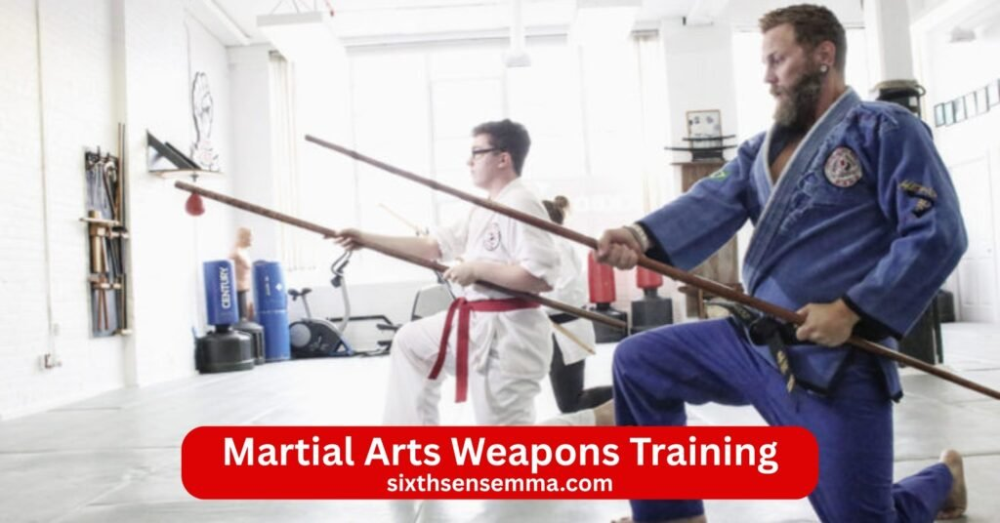
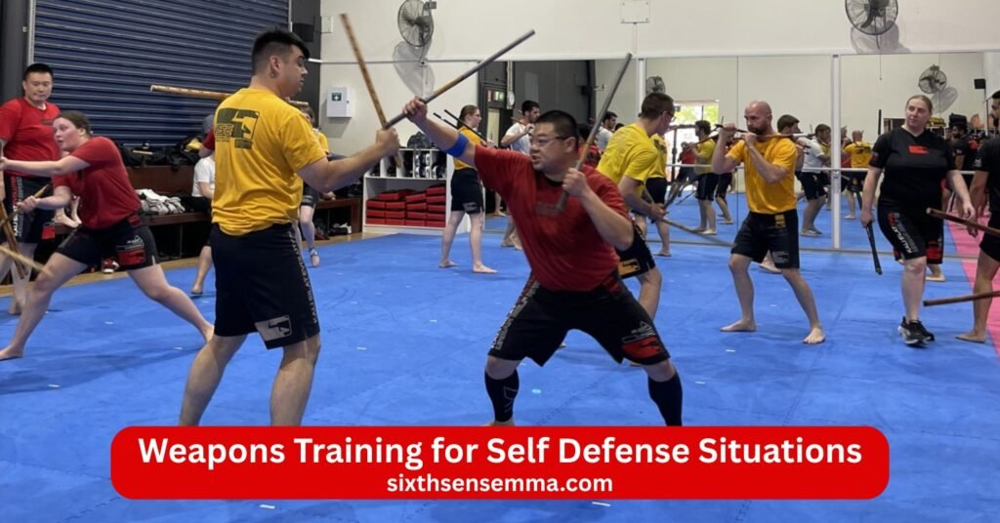
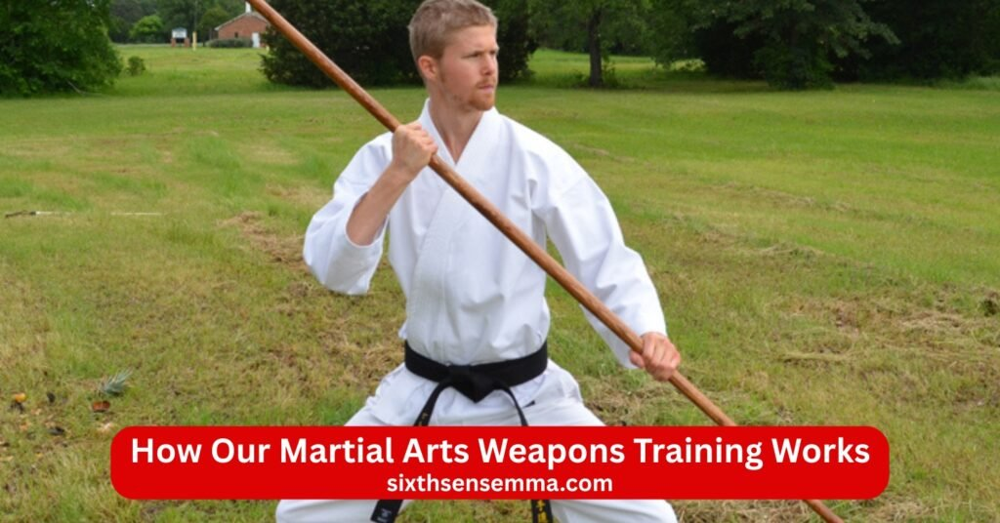

Martial Arts Weapons Training Professional Self Defense & Skill Development Program

Martial Arts Weapons Training at Sixth Sense MMA teaches you strong and practical skills for real self defense. We draw from filipino martial arts weapons japanese weapons martial arts escrima kali arnis and other well known traditional martial styles. Whether you are a beginner or already have some experience here you can train with stick bo staff nunchaku sword knife flail and improvised weapons to greatly improve your coordination hand eye coordination reflex agility hand speed flexibility precision timing and muscle memory. Every class focuses on both weapon based and empty hand techniques so you feel confident and ready for any self defense situation or combat.
Martial Arts Weapons Training – Program Overview
Our martial arts weapons training program helps students build real skills for self defense through practical weapon based practice. We teach weapons based martial arts from different traditions like filipino martial arts weapons and japanese weapons martial arts. Students learn to handle weapon tools safely while improving coordination hand eye coordination reflex agility hand speed and flexibility. The focus stays on precision timing fluid motion and muscle memory so every move feels natural in combat or a self defense situation.
Beginner to Advanced Level Training Structure
We start with beginner weapons training and move step by step to advanced levels. New students first practice basic strike block and spin movements with simple training weapons. As skills grow they move into more complex weapons techniques weapons forms and drill that combine empty hand and weapon training. Everyone gets personal guidance from an experienced instructor who makes sure each person progresses at the right pace. The program covers empty hand techniques unarmed combat and improvised weapons so students feel ready for any situation.
Safety Rules and Supervised Practice
Safety comes first in every class. All practicing weapons happens under close supervision to prevent injury. Students always follow clear rules and use proper gear. Spar starts only when ready and every session builds mastery the safe way. This approach lets martial artists gain confidence while keeping training with weapons controlled and effective.
Types of Weapons Taught in Our Martial Arts Program
Our martial arts weapons training program introduces a variety of martial arts weapons drawn from filipino martial arts weapons japanese weapons martial arts and other martial arts traditions. Students practice training with weapons to develop precision timing reflex agility hand speed flexibility and strong hand eye coordination. Every weapon and style is taught with clear focus on self defense combat readiness and safe mastery.
Stick and Staff Weapons Training
Stick and staff training builds the foundation of many weapon based skills. Students learn escrima sticks kali sticks training bo staff martial arts escrima weapons drills escrima kali and arnis movements. Classes cover fast strike block defensive techniques and smooth fluid motion. Bo bo staff and stick work improves hand to hand ability and prepares students for melee situations.
Traditional Practice Weapons (Wood & Foam)
Students train with nunchaku nunchaku training nunchaku techniques bo bo staff sword longsword knife flail and other weapons like these. Practicing weapons such as sword fighting styles and blade handling helps develop spin wield control muscle memory and confident empty hand transitions.
Short and Long Range Weapons Awareness
The program teaches clear awareness of short and long range weapons so students can adapt to different distances in combat or a self defense situation. Training includes sword fighting styles blade work muay thai weapons concepts krav maga weapons defense and sambo weapons ideas. Students also explore improvised weapons and basic martial arts weapons laws usa to stay responsible while building practical skills in weapons techniques empty hand training and unarmed combat.
Basic Martial Arts Weapons Techniques for Beginners
Our martial arts weapons training program starts with simple beginner weapons training to help new students feel comfortable right away. We teach weapons based martial arts basics from filipino martial arts weapons japanese weapons martial arts escrima kali and arnis styles. Every class focuses on building coordination hand eye coordination reflex agility hand speed and flexibility while learning how to use weapon tools safely and correctly.
Proper Grip Stance and Footwork
The first step in training with weapons is mastering proper grip stance and footwork. Students learn to hold stick bo staff nunchaku sword and knife with strong yet relaxed control. A solid stance keeps balance during strike block and spin movements. Good footwork helps move smoothly in any direction while keeping precision and timing. These basics create a strong foundation for all weapons techniques and prepare the body for fluid motion in combat or self defense situation.
Controlled Strikes and Defensive Movements
Beginners practice controlled strikes and defensive movements to develop safe power and speed. Classes cover basic strike patterns with escrima sticks kali sticks training bo staff martial arts and nunchaku techniques. Students also learn block parry and defensive actions against incoming attacks. Empty hand training mixes in to show how weapon skills connect to unarmed combat. Every drill builds muscle memory so movements become natural and confident.
Advanced Martial Arts Weapons Training Techniques
Once students gain confidence in basics the program moves into advanced martial arts weapons skills. Training draws from traditional martial roots like sword fighting styles krav maga weapons defense muay thai weapons and sambo weapons concepts. The focus shifts to higher mastery improvised weapons use and real world self defense application.
Combination Attacks and Counters
Advanced classes teach combination attacks and counters that flow together naturally. Students practice linking strike spin block and flail movements with nunchaku longsword blade and stick. Weapons forms become more complex blending empty hand techniques and weapon based actions. Spar sessions help students test counters against partners while keeping safety and control first.
Timing Distance and Accuracy Control
Timing distance and accuracy control form the heart of advanced weapons techniques. Students train to read opponents manage short and long range weapons and land precise hits at the right moment. Hand speed reflex and agility improve through fast drill and melee practice. This level helps martial artists handle any self defense situation with calm precision and strong overall martial arts ability.

Weapons Training for Self Defense Situations
Our martial arts weapons training program prepares students for real self defense situation with practical weapon based skills. We draw from filipino martial arts weapons escrima kali arnis krav maga weapons defense and other traditional martial systems. The focus stays on staying calm reacting fast and using weapon tools or improvised weapons to protect yourself and others.
Defending Against Armed Attacks
Students learn to handle defending against armed attacks through realistic drill and spar. Classes cover responses to knife stick sword blade and other melee threats. Training includes block parry strike and counter moves that blend empty hand techniques with weapon defense. Timing distance and reflex help students stay safe while creating openings to escape or control the situation.
Weapon Control and Disarming Awareness
Weapon control and disarming awareness form key parts of every class. Students practice safe ways to wield a weapon and gain control in close range. Disarming techniques teach how to take away stick nunchaku bo staff longsword or knife from an attacker. Hand speed agility precision and muscle memory make these moves effective. The goal is to build confidence so students feel ready for any combat threat.
Martial Arts Weapons Training for Fitness & Focus
Martial arts weapons training also boosts physical fitness and mental strength. Training with weapons like escrima sticks kali sticks training bo staff martial arts nunchaku techniques and sword fighting styles improves overall health while sharpening the mind. Every session combines fun movement with serious skill building.
Hand Eye Coordination and Reflex Development
Hand eye coordination and reflex development grow quickly through fast strike spin block and fluid motion practice. Weapons like nunchaku bo flail and stick demand quick reactions and smooth control. Drills build hand speed agility and flexibility so the body moves naturally. These skills carry over to empty hand training and everyday activities.
Mental Discipline and Confidence Building
Mental discipline and confidence building come from consistent practice. Students learn focus patience and control under pressure. Mastering weapons forms combination attacks and defensive moves creates a strong sense of achievement. Overall martial arts training with weapon tools helps reduce stress and increases self assurance in daily life and any self defense situation.
Who Can Join Our Weapons Training Program
Our martial arts weapons training program welcomes everyone who wants to learn practical self defense skills with martial arts weapons. We draw from filipino martial arts weapons japanese weapons martial arts escrima kali arnis and other traditional martial styles. No matter your age or background you can start training with weapons and build coordination hand eye coordination reflex agility hand speed and flexibility in a safe and supportive setting.
Training for Men Women and Teens
Classes are open to men women and teens of all fitness levels. Martial artists from different walks of life join together to practice weapon tools like stick bo staff nunchaku sword knife and flail. The program includes weapons based martial arts techniques that suit everyone. Teens gain confidence and focus women learn strong defensive moves for real self defense situation and men develop power and precision. Everyone trains side by side in a respectful environment.
Beginner Friendly and No Experience Required
The program is fully beginner friendly with no experience required. New students start with basic strike block spin and grip movements. An experienced instructor guides every step so you feel comfortable from day one. Whether you want to learn kali sticks training bo staff martial arts nunchaku techniques sword fighting styles or krav maga weapons defense classes meet you where you are and help you progress safely.

How Our Martial Arts Weapons Training Works
Our martial arts weapons training follows a clear and effective system. Students practice weapons techniques weapons forms drill and spar while blending empty hand training and improvised weapons skills. Every session builds muscle memory timing precision and fluid motion so you gain real ability.
Step by Step Learning System
We use a step by step learning system that takes you from basics to advanced levels. Beginners master proper grip stance footwork and controlled strikes. As you improve you move into combination attacks counters disarming and short and long range weapons work. Empty hand techniques connect with weapon based moves. Consistent practice leads to mastery and strong overall martial arts skills.
Group Classes and Personal Training Options
We offer both group classes and personal training options to fit your schedule and goals. Group classes create energy and teamwork while you practice escrima weapons drills muay thai weapons concepts sambo weapons ideas and nunchaku training with others. Personal training gives one on one attention for faster progress or specific focus areas. Both options keep safety first and help you build confidence in combat and everyday life.
Why Choose Sixth Sense MMA for Martial Arts Weapons Training
Sixth Sense MMA stands out as the best place to start or advance your martial arts weapons training. Our program combines filipino martial arts weapons japanese weapons martial arts escrima kali arnis and other proven traditional martial systems. Students learn real weapon skills with stick bo staff nunchaku sword knife flail and improvised weapons while building coordination hand eye coordination reflex agility hand speed flexibility precision timing and muscle memory. Every class helps you gain confidence for self defense situation and combat.
Certified Instructors with Weapons Training Expertise
Our instructor team brings deep knowledge and years of experience in weapons based martial arts. Each certified teacher has trained extensively in escrima weapons drills kali sticks training bo staff martial arts nunchaku techniques sword fighting styles krav maga weapons defense muay thai weapons and sambo weapons concepts. They guide students step by step from beginner weapons training to advanced mastery. With personal attention every martial artist learns safe and effective weapons techniques empty hand techniques and fluid motion.
Strict Safety Standards and Professional Equipment
Safety remains the top priority at every session. We follow strict safety standards and use only high quality professional equipment including traditional practice weapons made from wood and foam for nunchaku bo sword stick and blade work. All training with weapons happens under close supervision with clear rules for strike block spin spar and drill.
Practical Self Defense Focused Training
Our classes focus on practical self defense that works in real life. Students train to handle defending against armed attacks weapon control disarming awareness and short and long range weapons situations. Weapons like escrima sticks nunchaku longsword and knife blend with empty hand training and improvised weapons use. Timing distance accuracy control and reflex prepare you for any threat making overall martial arts skills strong and reliable.
Flexible Class Timings and Affordable Fees
We offer flexible class timings to fit busy schedules with options for group classes and personal training. Affordable fees make high quality martial arts weapons training accessible to everyone. Whether you are a beginner or experienced you can join men women or teens in a welcoming community that builds mental discipline confidence and lasting ability.
Contact US
If you want to start martial arts weapons training or need more details get in touch with Sixth Sense MMA right away! We are ready to answer your questions and provide full information about the program.
- 817 S MacArthur Blvd #100 Coppell TX 75019 United States
- (469) 972 7800
- info@sixthsensemma.com
Conclusion
Martial Arts Weapons Training at Sixth Sense MMA is more than just learning a new skill—it is a powerful way to improve your life. Whether you want to get ready for real self defense build better fitness and focus or simply learn exciting martial arts skills our program is perfect for you.Here you train in filipino martial arts weapons japanese weapons martial arts escrima kali arnis and other traditional martial styles. You learn to use stick bo staff nunchaku sword knife flail and improvised weapons while improving your coordination hand eye coordination reflex agility hand speed flexibility precision timing and muscle memory. Every class works on both weapon based and empty hand techniques so you stay confident and strong in any self defense situation or combat.
Follow Us on Social Media
Stay connected with Sixth Sense MMA through our social media channels. Follow us for class updates, training tips, and a closer look at our self defense community.
FAQ’s
Many martial arts incorporate weapons training, including Kendo (sword), Kobudo (Okinawan weapons like bo staff, sai, nunchaku), Eskrima/Kali/Arnis (sticks, knives), Krav Maga (improvised weapons), and Kung Fu (various traditional weapons).
The most effective traditional weapon varies by context, but Eskrima sticks and knives are often praised for modern self-defense practicality; the bo staff for reach and versatility; and the katana for cutting power.
Yes, Gun Fu (or gun kata) combines firearms with hand-to-hand combat, popularized in films but rooted in tactical training; historical Hōjutsu focused on Japanese firearms; modern systems like Krav Maga include gun disarms and use.
In Chinese martial arts, the four major/noble weapons are the staff (Gun), spear (Qiang), broadsword/saber (Dao), and straight sword (Jian).
Common lists of 11 types include Muay Thai, Taekwondo, Karate, Kung Fu, Judo, Brazilian Jiu-Jitsu, Aikido, Kickboxing, Boxing, Wrestling, and Tai Chi (varies by source).
The “big 4” for effective fighting/MMA are Boxing, Muay Thai, Brazilian Jiu-Jitsu, and Wrestling.
Wrestling (especially Greco-Roman) builds the most raw strength through explosive power and control; Sumo and Muay Thai also develop immense functional strength.
Jiu-Jitsu (especially Brazilian) is generally considered stronger in real fights, as it excels in ground combat where many fights end; Karate is effective for striking but less proven against grappling.
CIA agents train in practical systems like Krav Maga, Brazilian Jiu-Jitsu, Jeet Kune Do, and Kenpo Karate, focusing on quick neutralization, weapon defense, and improvisation.
Train with us in Coppell
The first class is free. Shorts, a t-shirt and a water bottle. We lend the rest.
Book a free class